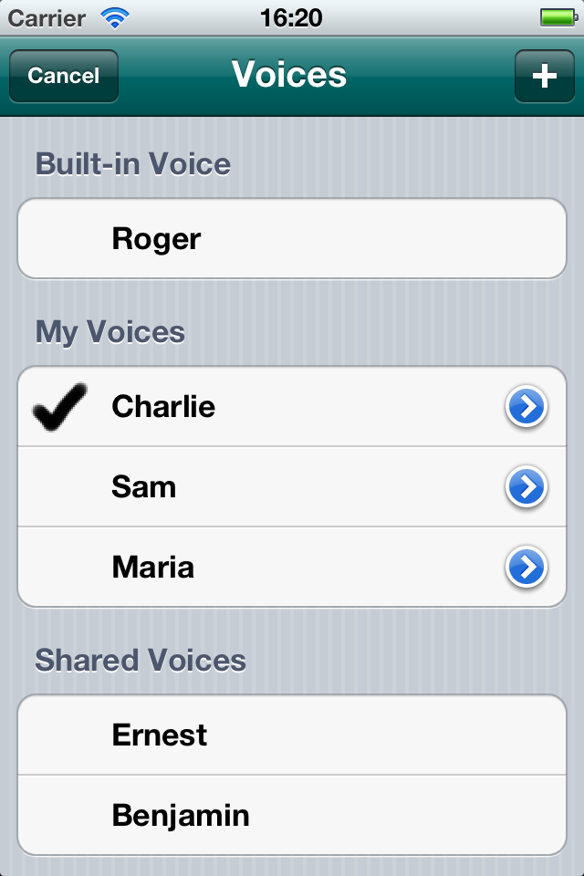

An iPhone demonstration of personalised speech synthesis by Douglas Hill.

I created Voices for my masters degree in Information and Computer Engineering at the University of Cambridge. The project was supervised by Bill Byrne and Matt Shannon.
Voices reads text out loud.
You can record your own voice, and Voices will attempt at mimic it.